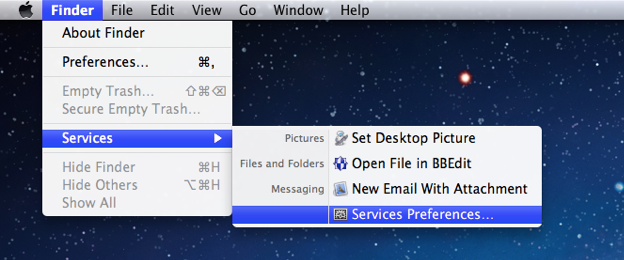
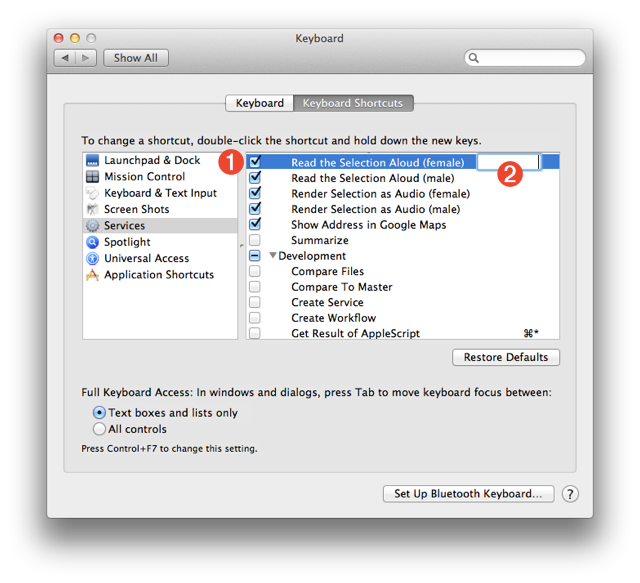
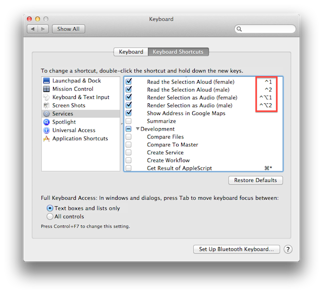

Once an Automator workflow service is created and installed, it will be available in the Services menu (located in the Application menu of most applications) and in many contextual menus throughout the system. To make it easier to access services that you use regularly, you can assign keyboard shortcuts to trigger them easily. Assigning keyboard shortcuts is done in the Keyboard Shortcuts pane of the Keyboard system preference.
DO THIS ►Access the Services preferences by selecting the “Services Preferences…” menu option of the “Services” menu, available in most application menus, such as in the Finder (show below).

Once the “Services Preferences…” menu item is selected, the System Preferences application will launch and automatically switch its display to the Services tab in the Keyboard Shortcuts view of the Keyboard preference pane (see below).
A list of the services installed on your computer are displayed on the right-side of the window. Each service can be activated or deactivated by selecting or deselecting the checkbox to the left of the service name 1 .

Optionally, services can be assigned keyboard shortcuts. Let’s assign keyboard shortcuts to the services you just created.
DO THIS ►In the Keyboard Shortcuts list, select the “Read Selection Aloud (female)” service. Hit the “Return” or “Enter” key once to activate the key assigning field to the right of the service name 2 (see above). Type the key combination “Control Key-1” to assign the key-pairing to the service, which will display as ⌃1 in the service list.
Continue the process of assigning keyboard shortcuts to the created services using the following keyboard combinations:
| Service | Key Combination | Key Notation |
| Read Selection Aloud (female) | Control-1 | ⌃1 |
| Read Selection Aloud (male) | Control-2 | ⌃2 |
| Render Selection as Audio (female) | Control-Option-1 | ⌃⌥1 |
| Render Selection as Audio (male) | Control-Option-2 | ⌃⌥2 |
When you’ve finished, the System Preference window should look something like the one shown below. (Make sure that the services are still active and have their checkboxes selected.)

Now that keystroke shortcuts have been assigned to the services, they can be accessed anytime you have text selected in a document or webpage.
Using the Speaking Services
DO THIS ►Try out the speaking services and their keyboard assignments (not the rendering services just yet), by selecting the following paragraph and typing either “⌃1” (Control-1) or “⌃2” (Control-2):
In the next workshop segment, we will use the newly assigned keyboard shortcuts to test and encode the first narration segment for the GarageBand project.